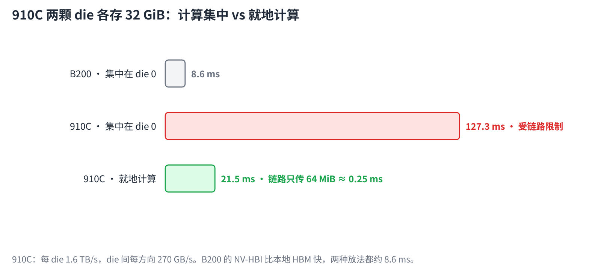
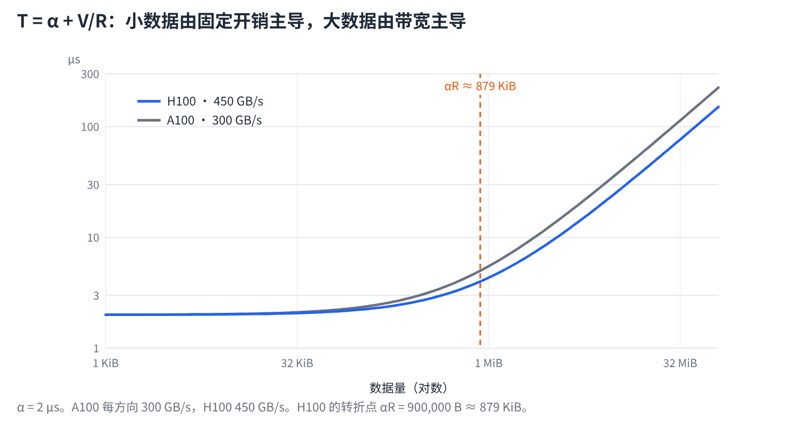
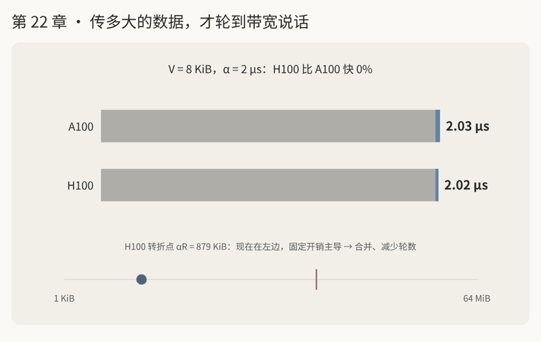

第 22 章 · 多芯片封装与互联：计算放在哪，数据走哪条路
本地运行
git clone https://github.com/wikieden/ai-infra-from-constraints
cd ai-infra-from-constraints/code/notebooks
pip install jupyterlab torch numpy
jupyter lab ch22_package_interconnect.ipynb也可以下载后直接用 VS Code 打开 .ipynb 运行。需要 GPU 的章节在 Colab 里选「代码执行程序 → 更改运行时类型 → GPU」。
本章回答：一个封装里有两颗 die，计算放在哪一侧有没有关系？主机上传一份数据，要在 GPU 上用多少次才值得？卡之间传小数据和大数据，各该优化什么？
讲解日期：2026-11-24 · 上一章：第 21 章 存储层次与数据搬移 · 下一章：第 23 章 架构演进与专用架构
对应原文：materials/ai-infra-book/manuscripts/04-加速器架构.md§4.5 L650–L730（图 4-26 到 4-29）
本章缩写：AllReduce = 全归约（各卡贡献合并、每张卡都拿到结果）· D2H / H2D = Device to Host / Host to Device（设备到主机 / 主机到设备）· DMA = Direct Memory Access（直接 / 内存 / 访问）· HBM = High Bandwidth Memory（高 / 带宽 / 内存）· NV-HBI = NVIDIA High-Bandwidth Interface（NVIDIA / 高带宽 / 接口，die 间链路）· PCIe = Peripheral Component Interconnect Express（外设 / 部件 / 互联 / 高速版）。全部缩写见 缩写与术语表
一颗芯片不够用时，就把计算和存储分到更多芯片上。资源变多了，生成数据的单元和使用数据的单元之间也变远了。本章沿三种连接看：封装内 die 之间、主机和加速器之间、加速器之间。
讲解
第一步：一个封装两颗 die：搬权重还是搬结果（2026-11-24）
类比：两个仓库之间修了一条路。 路比仓库自己的出货口还宽，在哪个仓库干活都一样；路很窄，就该在货所在的仓库干活，只把成品运过去。
原文 L658–L662：两颗 die 各存 32 GiB 权重，某阶段要把这 64 GiB 全部读一遍，先把计算都放在 die 0 上。本地读和跨 die 读走不同的接口，可以同时进行，阶段时间由慢的一路决定；跨 die 读的速率取 die 1 的 HBM 和链路中较小者。
| 产品 | 每颗 die 本地 | die 间链路 | 链路 / 本地 | 本地读 32 GiB | 跨 die 读 32 GiB |
|---|---|---|---|---|---|
| HGX B200 | 90 GB，4 TB/s | NV-HBI 10 TB/s | 2.5 | ≈ 8.6 ms | ≈ 8.6 ms（受 die 1 的 HBM 限制） |
| 昇腾 910C | 64 GB，1.6 TB/s | 每方向 270 GB/s | ≈ 0.17 | ≈ 21.5 ms | ≈ 127 ms（受链路限制） |
把处理 die 1 权重的计算挪到 die 1：两侧各读本地 21.5 ms，链路上只传输入和结果（比如 64 MiB，约 0.25 ms）。

图 22-1 · 比值大于 1（B200）时两颗 die 可以当一颗 GPU 用；比值小于 1（910C）时，应让计算在本地反复用大块权重，只在 die 之间传小的输入和结果。CloudMatrix384 在 DeepSeek-R1 的 decode 里就是每颗 die 放一个专家。
一句话：die 间链路带宽和本地 HBM 带宽之比决定计算放在哪有没有关系；比值小于 1 时，搬计算比搬权重划算。
第二步：主机到 GPU：上传一次，要复用多少次（2026-11-24）
类比：从外地进一批货（PCIe），和从自家仓库取货（显存）。 进货慢得多；同一批货只用一次，大部分时间花在进货上；能用一百次，进货的时间就摊薄了。
原文 L678–L689：CPU 准备的输入在主机内存，独立显存的 GPU 要经 PCIe 取。复制引擎用 DMA 搬，CPU 提交后可以干别的。
例子：RTX 4090，PCIe 4.0 x16 每方向 32 GB/s，显存 1,008 GB/s，输入 64 MiB：
上传是一次显存读取的 31.5 倍（正好是两条路的带宽比）。复用 \(R\) 次，每次分摊 \(T_{\mathrm{H2D}}/R\)：\(R = 100\) 时约 21 μs；\(R \ge 32\) 时分摊的上传时间已不超过一次显存读取。
- 一次性输入：提高主机链路带宽更有用。
- 权重：常驻显存，省掉重复上传。
- 流水：复制引擎和计算单元独立，可以边算这批边传下一批（第 21 章的双缓冲搬到主机链路上）。
- 统一内存（Apple）：CPU 写完、同步后 GPU 直接读同一块物理内存，"复制后使用"变成"同步后使用"。
场景代码：PyTorch 里用锁页内存 + non_blocking 让 H2D 和计算重叠（真实 API）：
import torch
x_host = torch.randn(64 * 2**20 // 4, pin_memory=True) # 锁页内存：DMA 能直接读
copy_stream = torch.cuda.Stream()
with torch.cuda.stream(copy_stream):
x_dev = x_host.to("cuda", non_blocking=True) # 在复制流上异步 H2D
# ……默认流上算上一批……
torch.cuda.current_stream().wait_stream(copy_stream) # 用之前等复制完成
一句话：主机链路比显存慢一个多数量级；上传一次就要在 GPU 上复用足够多次，或者和计算重叠起来。
第三步：卡之间传数据：固定开销 vs 带宽（2026-11-24）
类比：寄快递。 每次寄都有固定的上门取件时间（启动开销），再加路上按重量算的时间（数据量 ÷ 带宽）。寄一张明信片，时间几乎全花在等取件；寄一车货，路上的时间才是大头。
公式（原文 L702）：
- \(\alpha\)：固定开销（提交请求、通知完成）；\(R\)：有效单向带宽；\(V\)：数据量。
例子（原文 L705–L707）：HGX H100 每方向 450 GB/s，A100 每方向 300 GB/s，\(\alpha = 2\) μs，传 \([M, 4096]\) 的 BF16 激活（\(8192M\) 字节）：
| 数据量 | A100 | H100 | H100、\(\alpha\) 减半 |
|---|---|---|---|
| \(M = 1\)，8 KiB | 2.03 μs | 2.02 μs | ≈ 1.02 μs |
| \(M = 256\)，2 MiB | 8.99 μs | 6.66 μs | ≈ 5.66 μs |
换更快的链路，小数据几乎没变；减固定开销，小数据时间减半。
转折点（原文 L720）：
对这里的激活约 \(M \approx 110\) 行。链路越快，转折点越大，更多的传输落在固定开销主导的一侧。

图 22-2 · 对数横轴。8 KiB 时 A100 和 H100 几乎重合；2 MiB 时 H100 快约 26%。
两种对策（原文 L723–L725）：
- 小于 \(V^*\)：把多次传输合并成一次，摊薄启动开销；但等还没就绪的数据凑包会增加排队时间。
- 大于 \(V^*\)：减少字节或提高带宽。
- 减少轮数：100 次串行的小交换，光固定开销就 200 μs；跨服务器两台 HGX H100 做一次 16 字节的 AllReduce 约 25 μs，100 次就 2.5 ms。这时减少交换轮数比减少数据量有用（原书第 6 章）。
场景代码：PyTorch 分布式里，把多个小张量拼成一个再 all_reduce，就是在摊薄 \(\alpha\)（DDP 的梯度分桶也是这个思路）：
import torch
import torch.distributed as dist
grads = [p.grad for p in model.parameters()]
flat = torch.cat([g.flatten() for g in grads]) # 很多小张量 → 一个大张量
dist.all_reduce(flat) # 一次启动开销，而不是 len(grads) 次
一句话：卡间传输 = 固定开销 + 数据量 ÷ 带宽；小于 \(\alpha R\) 时合并或减少轮数，大于时才看带宽。
动画演示：传多大的数据，才轮到带宽说话

可交互版：animations/22-package-interconnect.html（滑块：数据量 1 KiB–64 MiB，对数；固定开销 0.5–8 μs）。
怎么看：
- 两根横条：A100（每方向 300 GB/s）和 H100（450 GB/s），各分成固定开销（灰）和传输（蓝）两段（第三步）；
- 转折点 \(V^* = \alpha R\) 标在数据量轴上；
- 播放时数据量 8 KiB → 256 KiB → 2 MiB → 32 MiB：前两档灰段占大头，后两档蓝段占大头；
- 右边显示两张卡的时间和 H100 快了多少。
练习与作答记录
题 1（第一步）：一个双 die 封装，每颗 die 本地 HBM 2 TB/s，die 间链路每方向 500 GB/s，两颗 die 各存 20 GiB 权重。计算都放在 die 0 时，读完 40 GiB 要多久？计算放到各自的 die、链路只传 16 MiB 结果呢？
作答记录：（待作答）
题 2（第二步）：一张卡 PCIe 每方向 64 GB/s、显存 3.35 TB/s，上传 256 MiB。上传和一次显存读取各多久？至少复用几次，分摊的上传时间才不超过一次显存读取？
作答记录：（待作答）
题 3（第三步）：一条链路每方向 900 GB/s、固定开销 3 μs。转折点 \(V^*\) 是多少？传 64 KiB 和 16 MiB 各要多久？
作答记录：（待作答）
原书"思考"（L729：四份 8 KiB 数据依次就绪，分别发送还是等齐合并）。想多练可以做。
口诀
路比出货口宽，在哪干都一样；路窄就在货边干，只运成品；
外地进货慢，一批货用够三十多次才不亏；
快递先等取件，再按重量走路；明信片换快车没用，一车货才看车速。
本章复习卡片
I83（双 die 的链路 / 本地带宽比与计算放置）、I84（H2D 与复用次数）、I85（\(T = \alpha + V/R\) 与转折点 \(\alpha R\)）。练习做完后，按答错、卡住的地方再补。
附录 · 延伸阅读
留给以后深入学习用，不影响本章主线。★ 是建议先读的。
推荐阅读
| 读什么 | 读哪里 | 读它为了什么 |
|---|---|---|
| ★ AII 第 4 章 | §4.5 L650–L730 | 本章原文，图 4-26 到 4-29 |
NVIDIA Blackwell 技术简报（原文 [^package]） |
NV-HBI 与双 die | B200 的封装与 die 间链路 |
| 华为 CloudMatrix384 论文 | decode 部署一节 | 按 die 放专家 |
| 《CUDA 从线程到 Tensor Core》第 26 章 | stream 与复制重叠 | 复制引擎和计算的并发 |
| AII 第 6、7 章 | 集合通信、数据中心网络 | 多卡、多机的通信轮数与固定开销 |
数学原理
- 并行两路取最慢：本地读和跨 die 读同时进行，阶段时间 \(= \max\)；跨 die 的速率 \(= \min(\text{远端 HBM}, \text{链路})\)。
- 分摊：上传一次、用 \(R\) 次，每次分摊 \(T/R\)；令它等于一次读取，解出 \(R\) 的下限。
- 一次函数的两项相等：\(\alpha = V/R\) 时 \(V = \alpha R\)。
公式清单
| 公式 | 意思 |
|---|---|
| 阶段时间 \(= \max(V_{\mathrm{local}}/R_{\mathrm{HBM}},\ V_{\mathrm{remote}}/\min(R_{\mathrm{HBM}}, R_{\mathrm{link}}))\) | 双 die 读取 |
| \(T_{\mathrm{H2D}} = V/R_{\mathrm{PCIe}}\)；复用 \(R \ge R_{\mathrm{HBM}}/R_{\mathrm{PCIe}}\) 次后分摊不超过一次读取 | 主机上传 |
| \(T_{\mathrm{edge}} = \alpha + V/R\) | 卡间传输 |
| \(V^* = \alpha R\) | 固定开销与带宽的转折点 |
代码对照：把本章的数字用代码算一遍
纯 Python，不需要 GPU。代码在仓库本地
ai-infra/solutions/chapter-code/ch22_package_interconnect.py，配套测试tests/test_ch22.py：
bash cd ai-infra/solutions/chapter-code uv run python ch22_package_interconnect.py # 一步一步打印 uv run pytest tests/test_ch22.py
讲义 ↔ 代码：
| 讲义 | 公式 | 写法 | 跑出来 |
|---|---|---|---|
| 第一步 双 die | 取最慢的一路 | dual_die_ms(hbm, link) |
B200 8.6 / 8.6；910C 21.5 / 127 ms |
| 第二步 H2D | 字节 ÷ 带宽 | h2d_vs_read(64 * 2**20, 32e9, 1008e9) |
2.1 ms、67 μs、31.5 倍；\(R \ge 32\) |
| 第三步 卡间 | \(\alpha + V/R\) | edge_us(V, R, alpha) |
2.02 / 6.66 μs（H100），2.03 / 8.99 μs（A100） |
| 第三步 转折点 | \(\alpha R\) | crossover_bytes(2e-6, 450e9) |
900,000 B ≈ 879 KiB，\(M \approx 109.9\) |
关键几行：
def dual_die_ms(hbm, link, gib=32):
v = gib * 2**30
local = v / hbm # die 0 读自己的 32 GiB
remote = v / min(hbm, link) # 读 die 1 的：远端 HBM 和链路取较慢者
return local * 1e3, remote * 1e3, max(local, remote) * 1e3 # 两路并行，取最慢
代码里才看得到的 3 件事：
- 32 GiB 是 \(2^{30}\) 制，带宽是 \(10^9\) 制，所以 B200 是 \(34.36 \times 10^9 / 4 \times 10^{12} = 8.59\) ms。
- B200 的 NV-HBI 按原文保守处理：即使按每方向 5 TB/s，也高于 4 TB/s 的本地 HBM，所以跨 die 由远端 HBM 决定。
edge_us的固定开销 \(\alpha\) 取 2 μs 是机内 NVLink 的教学值（原书第 7 章同一取值）；跨机时 \(\alpha\) 大一个数量级。
自己改一改（不影响练习答案）：
- 把 910C 的链路改成每方向 800 GB/s，计算放 die 0 还要多久？
- 用
h2d_vs_read算一算 H100（PCIe 5.0 每方向 64 GB/s、3.35 TB/s）的复用下限。 - 扫 \(V\) 从 1 KiB 到 64 MiB，画出
edge_us在 A100 和 H100 上的曲线。